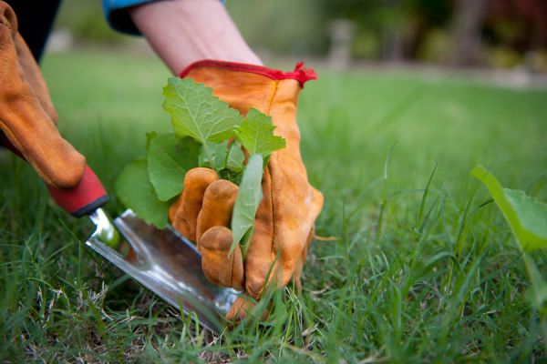
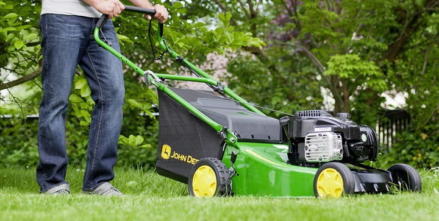

Aunque muchos piensan que realizar este mantenimiento es muy trabajoso, el cuidado del jardín puede proporcionar muchos momentos de evasión, disfrute, satisfacción y relajación al aire libre y en contacto con la naturaleza.
Mantenimiento del jardín
1) Riego.- si no se riega puede que comiencen a marchitarse. En cambio si se excede en el riego, las raíces pueden llegar a pudrirse para que siempre cuente con su mejor aspecto.
2) Fertilizantes.- El abonado y uso de fertilizantes es algo que no debemos dejar pasar si queremos que nuestras plantas prosperen. Recuerda que “plantas sanas” es igual a menos mantenimiento del jardín.
3) Mulching.- El mulching o acolchado del suelo es uno de nuestros mejores aliados, no solo para reducir la aparición de las malas hierbas, sino que, además, mejoran enormemente tanto la apariencia del jardín, como la salud del sustrato.
4) Limpieza de las plantas.- Ya sea por el ataque de alguna plaga, por deficiencias en el riego o porque el otoño llegó, nuestras plantas pueden “ponerse feas” a causa de ramas secas, hojas amarillas, flores marchitas y mucho más… Acostúmbrate a quitar estas “partes feas” cuando des paseos por tu jardín, de este modo, permanecerá verde y ordenado de manera más continua.
5) Malas Hierbas.- Utiliza un cuchillo especial o un herbicida selectivo, como COMPO Herbicida Selectivo Césped. Con el suelo húmedo es más fácil arrancar las malas hierbas en suelos donde no se puede labrar, como en el caso de un césped.
6) Podar el Césped.- El césped debe cortarse según su crecimiento; recuerde no cortar más de un tercio del pasto en una pasada. Es esencial cortar el césped a medida que sea necesario. En la primavera esto puede traducirse en más de una vez por semana. No es recomendable cortar el césped cuando está húmedo.
